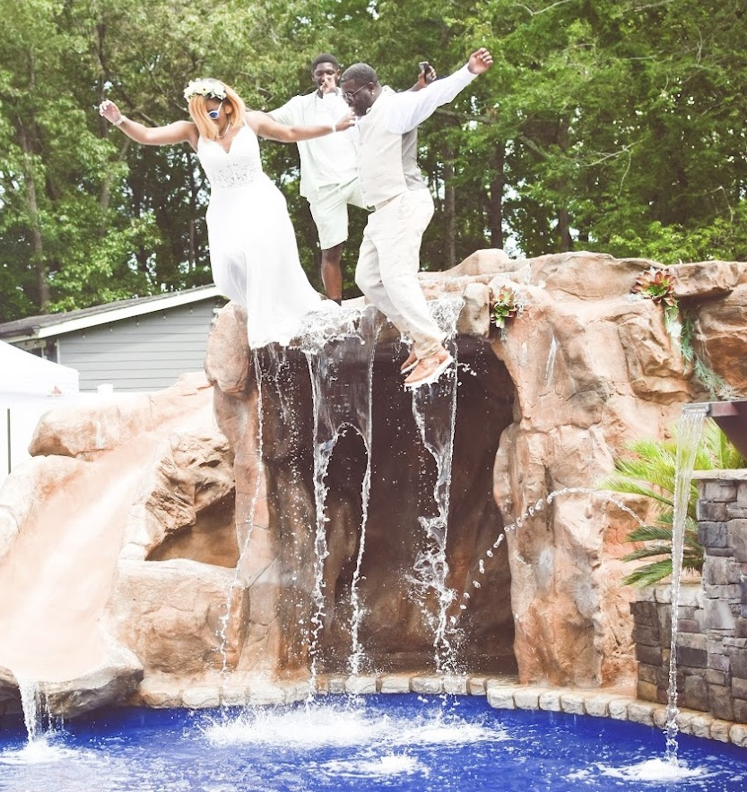
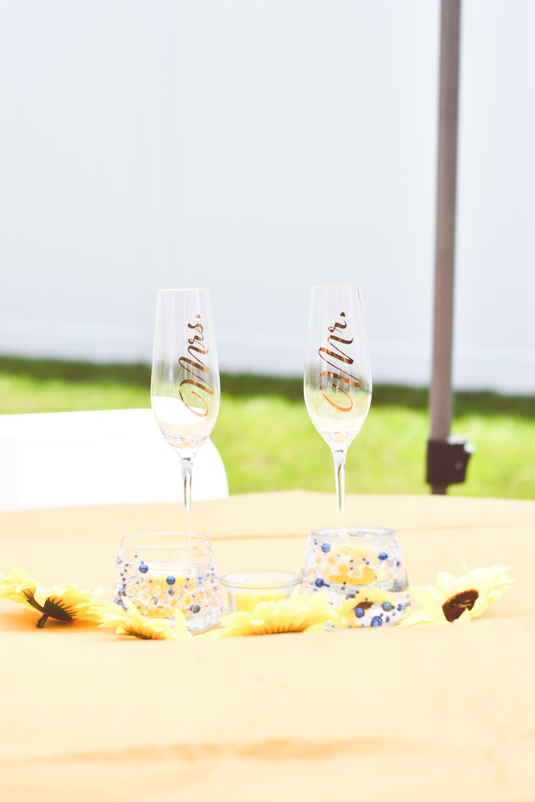

Projects
A selection of my academic work in web and digital design,
cybersecurity technology, and cloud computing.
Decks by Walt
CMST 385 | Summer 2025
A website developed using my father's deck construction
business as the subject, incorporating photographs of
actual construction projects.
View Website
Academic demonstration website. Checkout and ordering
features do not process actual purchases.
Prep & Chef
CMST 386 | Fall 2025
A multi-page culinary website featuring meal planning,
recipes, preparation guidance, and an interactive
ingredient list generator.
View Website
Academic demonstration website. Some features are
examples rather than fully operational services.
Dé Vine Web Resource Hub
CMST 387 | Summer 2026
An educational website covering user experience,
accessibility, web security, performance optimization,
and responsive design.
View Website
AWS Cloud Computing and Virtualization
CMIT 495 | Fall 2026
Hands-on AWS virtualization and cloud storage work
involving EC2 instances, Ubuntu Linux, Windows Server,
Amazon EFS, and Amazon S3.
Project documentation and screenshots will be added
as supporting portfolio evidence.
AWS Cloud Architecture and Infrastructure Deployment
CMIT 426 | Fall 2026
AWS infrastructure exercises involving Amazon EC2,
load balancing, Auto Scaling, security groups,
and CloudFormation deployments.
Architecture documentation and project evidence
will be added to this portfolio.
Featured Venture — Dé Vine Events
CMST 355 | Spring 2026 | WordPress Website
Dé Vine Events is my event-planning venture and the
subject of a WordPress website I developed for my
Content Management Systems course.
Using WordPress and the Astra theme, I developed
a website featuring customized branding, service
descriptions, event galleries, package information,
and organized navigation.
The project also incorporated my original photography
and visual content to demonstrate event presentation
and creative storytelling.
My responsibilities included website design,
content organization, theme customization,
photography, and content management.
The original website was hosted through a temporary
academic Azure environment and is no longer publicly
available. Selected project images and documentation
are preserved for this portfolio.

